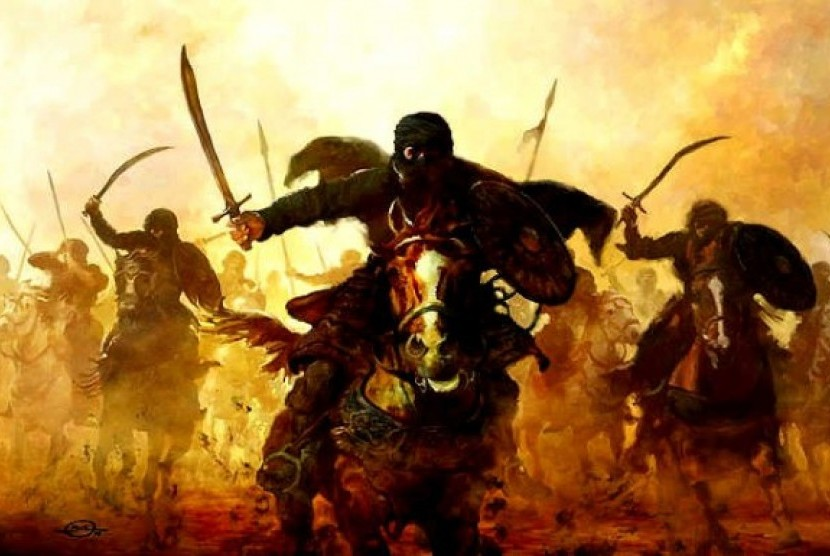
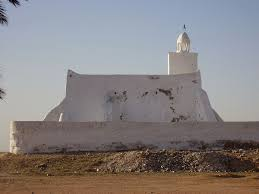
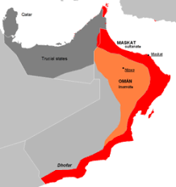

Khawārij or Kharijites were a group of Muslims who rioted against Imam Ali, Peace be upon him, in the middle of, and after, the Battle of Siffin, as well as in the event of Arbitration. They then began the Battle of Nahrawan against the Imam. After their defeat in the Battle of Nahrawan, some of them started a social, political, military, and ideological sect in accordance to their views. In the long run, they branched into different groups and conquered parts of the Islamic territories. The sects of Khawarij ceased to exist throughout the history. Today, only Ibadiyya continue to exist in some areas such as Oman. Their views are close to those of other Muslims.

The Kharijites, also called al-Shurat, were an Islamic sect which emerged during the First Fitna. The first Kharijites were supporters of Imam Ali then they rebelled against his acceptance of arbitration talks to settle the conflict with his challenger, Sayyidna Mu'awiya, at the Battle of Siffin in 657.


The Ibadi sect is a subdivision of the Kharijites named after Abdallah ibn Ibad who is said to have lived at the end of the 6th century.
Ibadid missionaries gained followers among the Berbers of North Africa , and in the 8th and 9th centuries the Ibadis dominated large tracts of land there.
The Ibadis are tolerant of other Islamic orientations and non-Muslims, but in principle do not marry Muslims outside of Ibadism and stick to their own traditions and interpretations of law.